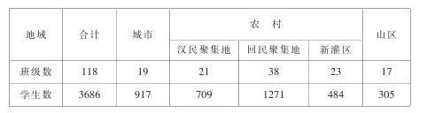
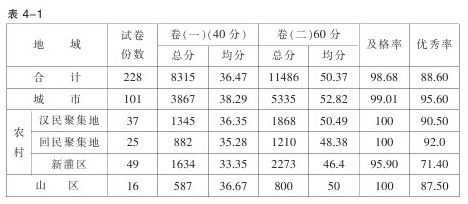
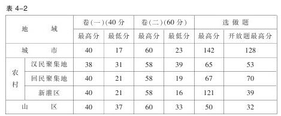

灵武实验区一年级《数学》（上册）实验报告 [1]
在我们满怀豪情跨入21世纪，迎接知识经济挑战，展望灵武教育发展美好前景之时，教育部将我市列入国家基础教育课程改革38个实验区之一，这既是我市教育发展的机遇，又是对我市教育界同仁的挑战。为了稳步、扎实、有效地开展一年级数学（上册）实验工作，小学数学课改实验小组在专家、区教研室的指导下，开展了富有成效的工作。现就我实验区一年级数学（上册）实验分基本概况、实验成效、采取措施、存在问题及建议五方面分述如下。
一、基本概况
（一）地域特点及班级、学生数
灵武市教委所属直属三所小学，乡镇14个教委，一年级学生全部参加本次国家基础教育课程改革实验。本实验区按地域可分为城市、农村、山区，其中农村又分为汉民聚集地、回民聚集地、新灌区三类。下表具体反映了各类地域班级数及学生数。

（二）教师状况
一年级数学实验教师共101人，其中男教师30人，女教师71人；回族教师38人，汉族教师63人；本科1人，专科35人，中专63人，高中2人；小学高级教师8人，一级教师48人，二级教师32人，未评级教师13人，教龄5年以内34人，6-10年42人，11-15年18人，16-20年5人，20年以上2人。这些实验教师周任课总节次1787节，师均周任课19.42节；周任课最多的29节；每位教师任课种类师均3.25门，所任科目最多达7门。根据教师状况统计说明，本次课程改革灵武实验区小学实验工作教师结构合理，呈年轻化。小学数学课改实验是在常态下进行的。
二、实验成效
（一）教师理念的变化
本次小学数学课程改革是全局性、结构性的教育教学改革，是对小学数学教育功能和价值的重新定位。在实验的诸多因素中，最关键的是教师的观念的转变。经过一个学期的实验，教师初步更新了观念，树立了新的教育理念。
在教学观上：体现数学教学是数学活动的教学，教学过程是师生互动，共同发展的过程，教学中根据：“问题情境—建立模型—解释、应用与拓宽”的基本模式创设既贴近学生生活经验，又符合学生认知水平的具体、生动富有挑战性的问题情境，让学生开展有意义的教学活动，引导学生合作交流，并通过应用与拓宽的形式，使学生在知识与技能，过程与方法，情感态度和价值观得到和谐发展。
在学生观上：体现学生是数学学习的主人，努力培养学生的学习愿望，树立“一切为了学生，为了一切学生，为了学生的一切”教学观念，为学生的思考留下充分的空间，使学生真正成为学习的主人，尊重学生的个性差异，努力使每个学生都获得发展。
在教师观上：体现“教师是课堂教学的组织者、引导者与合作者”的教育理念，树立教为学服务的教学观念，把学习的主动权交给学生，努力实现师生互动，共同发展，并实现了教师的发展，促进学生的发展，教师的创造性激发、启迪学生的创造性。
在过程观上：体现学生参与的过程，学生思考的过程，师生互动的过程。在数学活动的过程中，让学生经历、体验、感受、探索，从而丰富了学生的知识背景，为学生后继学习奠定了坚实的基础。
在发展观上：体现注重学生的数学思考——思维的条理性、逻辑性以及合情推理，尤其着力培养学生创造性数学思维所必须对既定结论的怀疑意识，对现实问题的探究意识，同时引导学生掌握多种思维策略，为其终身学习和可持续发展提供了一把金钥匙。
在课程观上：体现“数学课程应突出基础性、普及性和发展性。”以大众化、生活化的方式反映重要的现代数学观念和数学思想方法，培养学生实事求是的科学态度，增进学生对数学的理解和应用的信心，形成勇于探索，勇于创新的科学精神，获得适应未来社会、生活和进一步发展所必须的教学事实以及基本的思想方法和必要的应用技能。
（二）教学方式、学习方式、评价方式的变化
教学方式、学习方式与评价方式的转变是本次课改的显著特征，在调研、座谈与研讨中，我们欣喜地看到一年级数学实验教师在教学方式、学习方式、评价方式上发生了一些可喜的变化。
教学形式为教学内容服务，不同的教学形式在教学中就会产生不同的效果，多样化的教学形式必将会使教学过程显得丰富多彩。在课堂教学的组织形式上，实验教师能根据不同的教学目标合理安排座位，师生能民主、平等交流，自由、宽松、平等、和谐的教学环境逐步形成，课堂上教师能面对全体学生，注重学生个别差异；根据不同的教学内容灵活地运用教学方法，创设问题情境，激发学生的兴趣，给学生参与、思考的机会；能根据学生的特点、教材特点，合理利用教学手段，选择恰当的呈现方式，调动学生的积极性和主动性；能根据学生特点，教材特点选择不同的教学活动方式（讲解、提问、演示、讨论、学生操作、小组活动等），体现学生的主体地位，给学生发挥潜能创造展示的平台，给学生观察、表达、思考、操作提供机会。
本次课程改革重点之一，是要转变学习方式，提倡自主、探索与合作的学习方式，逐步改变以教师为中心、课堂为中心和书本为中心的局面，促进学生创新意识与实践能力的发展。学习方式的变革它关系到我们的教育质量，关系到师生校园生活的质量，关系到年轻一代拥有一个什么样的未来，关系到民族素质的提高，关系到综合国力强弱。本学期期末为了全面了解本次实验的情况，我们对全市参与本实验的一年级数学教师、学生及学生家长进行抽样问卷调查，从问卷调查的结果看：100%的教师、学生及94.2%的学生家长对本次课程改革倡导的自主、探索与合作的学习方式给予高度评价。他们认为：新的学习方式很好，能充分相信学生的学习能力，极大地提高学生学习生活中的有效参与程度，注重知识的形成过程，利于培养学生的探究精神、探索能力及团队合作精神。在平时的调研中，我们也看到教师关注的是学生的成长与发展，思考的是怎样调动学生的积极性，让学生全身心投入教学活动过程之中，研究与思考的是如何培养学生的创新意识与实践能力，为学生提供探索的空间，强调的是过程与方法，情感态度与价值观。
《数学课程标准（实验稿）》明确指出：“评价的目的是全面了解学生的学习状况，激励学生的学习热情，促进学生的全面发展。”在实验中实验教师依据评价的导向性、激励性、发展性原则，在做好成长记录带评价的同时，重视课堂教学中对学生进行合理评价。通过这一评价方式，鼓励了学生积极参与数学学习活动，促使了学生积极主动地进行操作，参与小组合作学习，培养了学生良好的学习习惯，增强了学生提问与质疑的意识，保护了学生的自尊心、自信心。
（三）教师、学生、家长对小学数学课程改革的关注及心理倾向
“课程改革是一项关系到几亿人、几代入生命质量的宏大工程。”在本次实验中一年级数学实验教师以极大的热情投入到通识培训、教材培训、实验教研之中，他们从市教委组织的期末综合素质测评、合作测试、基础知识、技能技巧考试的结果中，看到自己的成绩，他们对本次实验充满信心。在实验中他们不仅为自己的成绩感到欣喜，同时为学生进入快乐的数学生活而感到幸福，为家长看到自己的孩子能和谐、全面发展的高兴而高兴。对本次一年级数学实验，教师充满美好憧憬，正如两位实验教师在阶段性小结中写得那样：“学生在实验中成长，我们也在实验中成长”，“我和学生共同走进快乐的数学生活乐园”。
“一年级学生喜欢数学，他们的数学学习生活是幸福的、快乐的，丰富多采的。”这是我们这次学生综合素质测查市教管室管理人员、教研员，对学生学习生活一致的评价。学生对数学情感态度价值观的概念虽不理解，但从他们对数学教师的喜爱程度，对数学学习的浓厚兴趣，参与数学活动的积极性、主动性，以及他们对待每一个数学题目的认真态度，教师、家长被深深地感染，看到他们充满自信，充满自信心的课堂表现，我们深切感到他们对数学学习的情感态度价值观将会伴随他们步入更加广阔的数学世界。调查显示，大部分学生对教材编排的内容，课堂小组活动形式，教师学生民主、平等的关系，情感认同，兴趣增强。
新课程的改革实际上是学校文化的重建，涉及到社会生活的诸多方面，特别是能否争取家长的理解和支持，与课程改革有重要影响。新课程实验开始后，各学校普遍重视社会动员，以召开家长会、给家长的一封信，开放课堂等形式向家长宣传新课程，扩大课程改革的社会影响。有的学校为了使家长感受新课程，看自己孩子在新课程中的进步与发展，以公开课的形式请家长到课堂观摩。通过不断努力，家长们对新课程逐步理解了，并给予更多的支持，他们普遍反映孩子们兴趣广泛了，学得更活了。
（四）学生知识与技能、综合素质在提高
经过一学期的实验工作，学生在知识与技能，数学思考、解决问题、情感态度等方面得到了较好的发展。如一位老师在上“20以内数的进位加法整理与复习”课时，给每个小组分发了36道进位加法的卡片，当每个小组学生算完这些题后，教师提出整理的要求，在小组进行整理的过程中，学生合理分工，积极合作，按照他们的认知水平整理出了四种不同的进位加法表，并在横看、竖看、斜看中发现规律。这节课从一个侧面反映出一年级数学新教材实验不仅有利于提高学生知识与技能水平，培养学生思维的有序性、广阔性，促使学生形成认知策略，也有利于使学生在问题解决中，形成自主探索、合作交流、动手实践的学习方式，增进学生树立学好数学的信心。
期末考试评价令学生、教师、家长、学校管理者放心、满意。为了基础教育课程改革实验工作的键康发展，小学数学课题组依据《数学课程标准（实验稿）》、数学一年级（上册）教学内容及相关教学目标，将期末考试评价分为试卷（一）、（二）两部分（试卷见《小学数学实验年级考试改革的尝试与反思》附件）。试卷（一）权重分40分，主要考察学生动手操作、数学语言表达、自己创设情境的能力，评价方式为小组内互评。内容包括说一说生活中的数，指一指文具盒的上下、前后、左右；自己创设情境比一比长短；拨一拨钟表是几时整或几时半。试卷（二）主要考察基础知识、基本技能。本卷又分两块，第一块必答题权重60分，第二块为选做题，没有定值赋分，评价学生，不评价教师。卷（二）突出过程，凸现活泼、挑战的形式，克服呆板传统出卷方式。测试知识点为：（1）数序；（2）数的规律；（3）数位认识；（4）长短、轻重；（5）数数并渗透统计表；（6）基本口算15道题；（7）图画应用题；（8）看图列式（有情境的和无情境的）；（9）合情推理；（10）填“＜、=、＞”符号；（11）开放题。
参加这次期末考试学生应到人数3678人，8人因病请假。为了有效分析本次实验成效，我们抽取城市、农村不同地域试卷进行统计，成绩如表4-1、4-2：


根据表4-1、4-2说明：（1）98%的学生达到基本要求，90.43%的学生15道计算题都能达到正确，学生分析问题、解决问题、口头表达能力得到较好地发展。（2）学生对数的认识、数学推理方面得到了发展。对试卷（二）中2题（）（）15（）（），学生就有种种填法：13、14、15、16、17；11、13、15、17、19；9、12、15、18、21等，8题的看情境图写算式□+□=□，有的学生以情境中的人列算式，有的学生以情境中的花列算式，还有的学生以情境中的鸟列算式。（3）从表4-2统计选做题：“写出你知道的□〇□=15的算式，写对一道给1分”的数据显示，学生有条理思维能力、探求规律的能力都得到良好的培养，学生的潜能得到良好的发展。测试时间到了，很多学生都要求延长时间，继续往下写。如山区永清学校的闵亮同学从9+6、10+5、11+4……写到15+0后，又从20-5、21-6、22-7、……写到39-24，共写了32个算式；新灌区白土岗中心学校马静同学从5+10、4+11、11+4、10+5、9+6、8+7、6+9、7+8、4+10+1、10+0+5、1+4+10、20-1-4后发现规律，有序写出3+12、12+3……0+15、15+0，在写的连加算式中，他从9+1+5、1+5+9……写到10+0+4+1、0+10+1+4，共写了39个正确算式。回民聚集地吴湖小学杨佳威同学在运用加法交换率写完加法算式后，从16-1、17-2、18-3一直推算到69-54=15共写出正确算式70道；城市逸夫小学一（3）班杨世尧同学，在按规律写0+15、1+14……15+0的加法算式后，从15-0、16-1一直推算到101-86=15，共写出正确算式128道，使卷面总共得分241分。她的家长看到女儿的试卷后，在试卷的空白处写到“试卷家长看过，成绩理想，非常感谢老师的精心教育，希望老师严格要求杨世尧，使下学期成绩更上一层楼”。任课教师也在她的案例分析中写到：□〇□=15这道题给学生提供了一个广阔的空间，我的学生最多写128道正确算式，写对100道以上12人。
（五）课程改革提升了一年级数学教师的专业化水平
2002年元月24日至27日，我们进行了一年级教师第五期培训，在培训中通过实验教师们对本期实验工作的小结、反思、经验交流，我们欣喜地看到我们的实验教师专业化水平有了明显地提高。他们确立了符合素质教育的新理念，能冷静、客观地分析目前实验中出现各种矛盾与存在问题，并能提出相应的对策。
有效开展教研活动，利于改进教学工作，利于探索落实教育目标的有效方法和途径，利于教师专业水平、科研能力的提高。根据我市实验学校相对分散，地域差异的原因，建立了市小学数学中心教研组，片区教研组，乡镇教委教研组及学校实验组的教研网络，各教研组明确职责，在市中心教研组统一布署下开展教研活动。通过集体备课、上研究课、专题研讨、日常讨论等教研形式促使教师尽快进入角色，提高自身专业水平。在集体备课时，我们立足片区，重备轻写，讲求实效，强调备学生的学习目标，备情境创设、备学生活动，备教师的教学方式与学生的学习方式，就教学的疑难问题与其他教师沟通交流写课后反思；上研究课，我们改变了只选择优秀教师上研究课的做法，立足片区、立足教委、立足本班学生，使不同区域的实验教师不仅看到自己的成长、成功与得失，而且还吸取其他教师的成功经验为我所用。截至2002年上半学期结束，组织市级研究课19节，片区研究课40节，直属小学、乡镇教委研究课72节，有效地促进了教师课堂教学水平的提高；在专题研讨中，我们以《实验教科书数学教师教学用书》提供的“如何设计课堂提问、如何恰当地创设课堂情境、如何在一年级数学课堂中组织探索式的学习氛围、如何实现一年级学习方式的多样化、组织课堂教学的讨论有哪些有效的策略、如何在课堂教学中引导学生开展游戏活动、如何结合学生的生活经验进行教学、如何在计算教学中体现算法多样化的思想、如何利用小组学习提高学生数学学习的效率、如何关注学生的数学学习过程”十个研究课题为基础，分阶段、分步骤在市级教研活动或片区教研活动中交流，开拓教师视野，使教师经验概念化，逐步提高教师教育科研能力；在实验过程中，我们提倡、鼓励教师进行日常讨论，互通有无，实现共同成长。如市一小三位数学实验教师，在上新课时，有意将同一内容安排在不同课时，先上的教师上完后把这节课的优点、缺点、学生反映情况、需改进的地方与其他两位老师交流，然后及时调整原方案，提高了课堂教学效率。在提高教师教育科研能力方面我们主要通过确立研究课题这一有效途径，展示、激励、帮助教师积累经验、查阅资料、大胆实践，目前我们向基础教育课程中心选送小学数学课改论文19篇，向《宁夏教育》选送论文46篇，向地区级选送论文95篇。
三、采取的措施
（一）师资培训
国家基础教育课程改革实验工作的开展一个重要环节就是对实验教师的培训。在培训工作方面我们除看刘坚、孔企平、傅道春、吴刚平、芦咏莉等10位专家讲座光盘，请专家、学者到灵武实验区进行的三期现场通识方面培训外，我们立足本区实际，在区教研室大力协助下，成功地进行了两期小学数学实验教师培训工作，培训采取参与式、互动式、专题研究式，主要内容是教材分析、研究课分析、小结、反思、研讨一些共性问题，交流成功经验。
（二）教研员任课，掌握实验工作的第一手资料
根据市教委实验工作安排，小学数学组两名教研员在实验基地东塔小学进行为期一个月的实践活动，上课16节，听课86节，参与东塔教委一年级教研活动4次。教研员任课，亲自实践，与其他实验教师亲自交流，获取课改资料。
（三）全面进行调研交流与指导
从10月10日至11月9日，区教研员与我市两名数学教研员先后对全市3所直属小学，14个乡镇教委一年级数学实验工作进行调研。在本次调研中，通过听课、座谈、交流，了解了各校实验情况，肯定了他们实验中所取得的成绩，好的做法，对实验中的疑惑、问题与实验教师共同研讨、交流，为实验工作的健康发展奠定了良好的基础。
（四）及时总结经验，扬长避短
2001年11月23日、2002年1月24日（两次）对实验工作及时进行阶段性总结，肯定了实验中所做的工作及取得的成绩，提出实验工作中思考的问题及建议，安排部署了下阶段实验工作。在阶段性小结会中，安排了10节研究课与六位教师的经验交流，促使教师提高实验水平。
（五）灵活、创造性地运用教材
《“新世纪”义务教育课程标准实验教科书·数学》，遵循三个面向的教育思想，在深入研究国内外数学课程的基础上，建立了促进学生发展，反映未来的社会需要，体现素质教育精神的教材体系。一年级（上册）数学教材的三大特点（密切数学与现实世界的联系，确立学生在数学中的地位，建立探索性学习方式、培养学生的创新意识）突出了基础教育课程改革的理念，突出了《纲要》六项目标，有效地促进了教师教育理念、教学方式的转变，有效地改变了学生的学习方式。
（六）实验教师的艰辛付出
基础教育课程改革实验，使教师长期已形成的教育思想、教学观念、教学方式发生了较大的变化，使课堂教学的内容、形式、方式进入了一个新的境界。面对一个个生动活泼的学生，面对新的实验教材、教学方式、学习方式、评价方式，我们的实验教师倍感自己的责任重大，他们深刻体会到自己不仅是新课程实施的主体，也是课程开发的主体，不仅担负着新课程的实验任务，也肩负着培养一代新人的重责。根据一年级实验教师任课节次和所任科目统计，实验教师周任课时数平均19.42节，任课科目三门以上占78﹪，任课周时数最多29节，任课科目最多的7门。118名实验教师在承担与其他非实验教师同样工作量的同时，利用休息时间、节假日积累实验中的一些数据，整理案例，填写和整理学生成长记录袋，并进行专业知识、理论的学习。一学期的实验工作取得了令学生、教学管理者、家长等方面满意的成绩，这些成绩的取得浸透着实验教师艰辛的汗水。
四、存在的问题
（一）教育理念转变不够到位，主要表现是：
1.有的教师角色地位还未发生根本性的变化，有时依旧是“我说了算”，让学生顺应自己，把自己的想法强加于学生。
2.应用意识不够强，有的教师只注重知识的传授，不注重应用，不能很好地运用所学知识解决生活中的一些实际问题。
3.有的教师忠于教材、忠于教案、忠于课堂结构的思维定势依然存在。唯恐一节课教学任务完不成，限制了学生开放性的思维及对有价值问题的探究。
4.有些课堂教学效果的评价任停留在问学生懂不懂、有没有问题等浅层次的层面上，而不是让学生带着问题走出课堂，走出校外，进行深层次的探讨与研究。
5.有些教师只注重“优势群体”，对“弱势群体”关注不够，不能很好地体现义务教育的普及性、基础性和发展性。
（二）“探究式”教学方法应用不当，“分组活动”存在程式化、形式化倾向。
（三）有些教师课堂中设计的有些问题没有实际意义，思考性、开放性不够，没有体现出问题的价值。
（四）部分教师知识结构不够完善，随机处理能力差，对学生提出的有些问题不能正确解答或引导，使学生感到不满意或失望，制约了学生的求知欲及发展。
（五）部分教师不善于总结经验，不善于积累自己教学中的一些闪光点和宝贵素材，不善于将自己的经验概念化，不注重提升自己的教学水平。只满足现状，不求进取。
五、几点建议
（一）继续加强通识培训，深入学习纲要和标准，进一步转变观念，领会纲要和标准的精神实质。
（二）教师要广泛地吸取信息，不断充电，增强自己的知识储备，树立终身学习的观念
（三）要加强教研活动，深入探讨有效的教学策略，使教学更加有效，更利于学生的全面发展。
（四）进一步研究评价的方法与策略，真正发挥评价的导向功能，促进学生发展的功能及激励功能。
（五）规范学前教育，要把新的理念、新的教学指导思想、新的数学思想、新的教学方式渗透到学前教育中，做好学前教育与小学教育的衔接。
（六）改变教学管理方式，教学管理要适应课改的需要，要用新的管理方式促进课改深入进行。
（七）扩大课改的宣传力度，争取社会、家长对课改的支持。